裝窮也是我的強項
臨走前，賈大娘問我要不要吃早飯？
我想說有那麼多的大麻花應該可以撐很久，就說不吃要上路了，但是我居然還是買了四個燒餅orz
一個燒餅五角，當早餐吃了一個，硬得跟磚頭一樣，牙齒要很好才啃得動。
剩下三個就當成萬年存糧收起來，吃完這個燒餅，肚子馬上跟我抗議說我幹嘛吃奇怪的東西，讓它難消化/_\
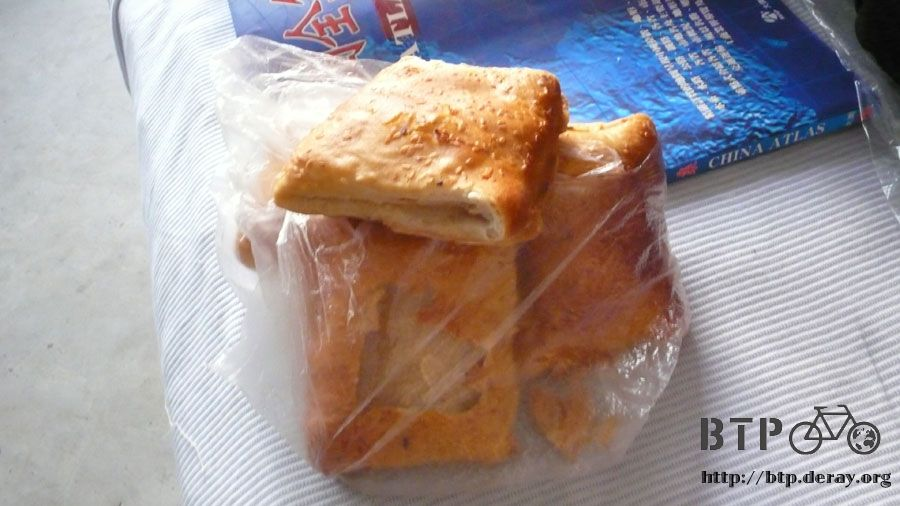
從這往邢台大約九十公里的路，一大清早六點半出發，估計中午就可以到那邊吃午餐。

這一段路一樣是走國道107，其中有三十幾公里都被規劃成綠色公路，兩旁都種滿了枝葉茂密的大樹，
騎乘在這邊相當的涼快而舒服～
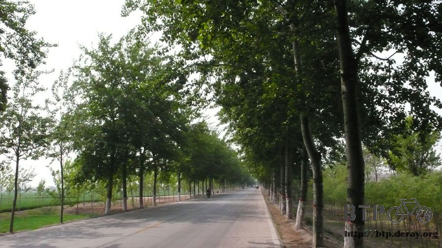
這次我不想曬的黒嘛嘛的，所以盡可能把自己包起來。
騎車的時候穿的是長袖排汗衣，外面一定會加一件風衣，用兩層來擋太陽。
褲子本來是穿短褲，但是這幾天已經有點曬黑，所以把胡大哥送我的黑色貼身長褲也穿在裡面，
這樣我的雙腳就整個被包起來了，一點也曬不到，唯一會被曬到的就只剩下我的臉還有露在手套外面的手指。
這些面積比較小，防曬乳就可以省很多的使用。
一路上倒也沒什麼特別的事情，所以就一邊聽歌一邊騎車，如計畫般的在中午十二點到達邢台。
雖然只是匆匆的經過，但我還蠻喜歡這裡的，感覺是個好地方。
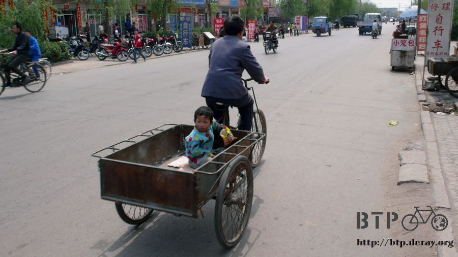
午餐就找了一間路邊的自助餐吃，有涼菜跟熱菜可以選，
算一算也有二十幾樣，我挑了一份紅燒肉，老闆本來說七塊，
我就用很誇張的口吻大聲說『這要七塊！？』然後就變成六塊五了。
其實我一點也不覺得價錢貴~_~這樣子就給人家殺價還真不好意思。
再配一個便當盒份的白飯，要價一塊錢，午餐就七塊半解決掉了。

坐在跟涼麵店共用的桌椅那吃飯，本來只是老闆跟我閒聊兩句，結果圍觀的人越來越多，
旁邊吃飯的客人、其他賣東西的小販，通通都圍過來，東問問我，西摸摸我的單車。
太熱情反而讓我有點緊張，幸好東西還蠻好吃的，所以不是很焦慮。
因為盛情難卻，所以就不方便在這邊休息，吃飽飯後說聲我該趕路了，道聲謝就出發。
還順便買了一根昨天吃過很好吃的鳳梨串，當作飯後的點心，邊騎邊吃。
就在快要離開邢台的時候，我依稀彷彿在小巷裡面看到『網吧』的招牌。
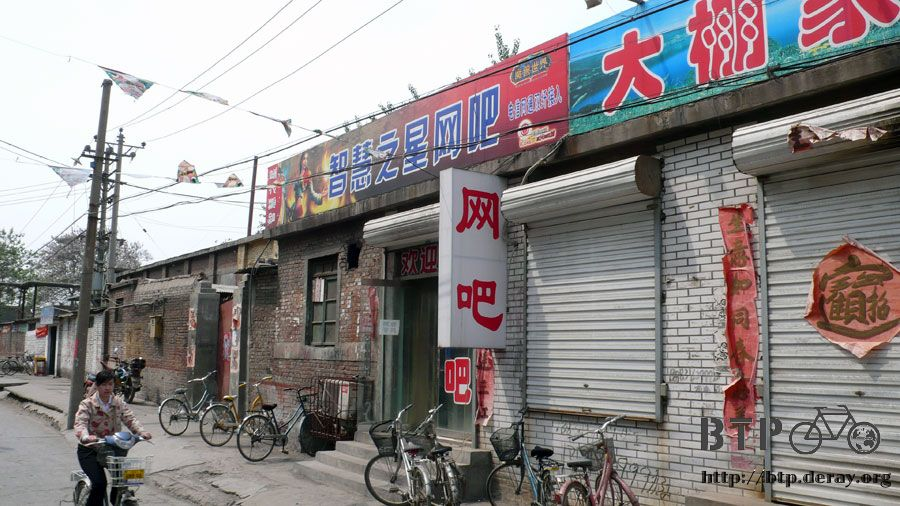
這可是我在中國看到的第一間網吧呀 T_T
終於可以讓我上網了，趕緊跑過去，先問了幾個問題。
『我自個有帶電腦，能用它接上網嗎？』
店員搖搖頭，不知道是不行、還是不知道？
『那我自己有外接硬盤，能把它接到你們這裡的電腦嗎？』
店員又搖搖頭，這樣到底是不行還是不知道？
管它的，那就先試試再說吧，上網一小時，費用兩塊錢，不知道是便宜還是貴，
但就算她跟我說要十塊錢，我也不知道行情價到底多少。反正兩塊我還給的起。
將單車搬到室內，深怕我在和電腦奮戰的時候，整台車被搬走了。
正當我翻包包拿出電腦和外接硬碟的時候，早上買的燒餅，咚、咚、咚三個依序掉到地上了。
店員看到了就說『你騎單車旅行就吃這玩意呀？』
太好了～！我成功的給人家一種我是窮光蛋的印象了！這對我來說真是一個大鼓勵。
『是呀，我這一路要走好幾個月，得省點花。不然半路就沒錢了。』
接下來就先試著搜尋這邊該不會有無線網路的服務吧。
失敗，當然不可能有那種東西。
那就試著將網吧的網路線接到筆記型電腦連線。
失敗，因為線太短根本拉不出來。
那就先把網頁的內容複製到外接硬碟裡，然後將外接硬碟接到網吧的電腦上。
失敗，不知道為什麼抓不到外接硬碟。
當場傻在哪裡，本來以為萬無一失的第三招，外接硬碟上傳法，居然也失敗了？
猜想可能是因為USB供電不足，推不動外接硬碟的關係，怎麼試都試不出來~_~
後來靈機一動想到我有帶iPod呀！
把iPod當成外接硬碟用，複製完檔案然後接到網吧的電腦，終於，成功了！
總算可以將已經寫好五天的遊記放到網頁上，跟家人、米莎莎還有各位朋友報個平安，
同時分享一下我的所見所聞，讓我當大家的眼睛，來看看不同的世界。
可惜網吧的電腦是簡體XP，我沒辦法打中文，所以Email不能回信、討論區的文章也只能看看而已。
就在網咖上網兼休息躲太陽一個小時，上傳網頁的速度還算挺快的，40多MB，十多分鐘也就搞定了。
這次旅行，遊記還是會連載，但是不可能天天連載，要是一個星期可以讓我上網一次的話，我也就心滿意足了。
下午繼續出發，中國雖然騎自行車的人很多，這其中是電動自行車的，大概也佔了15~20%(目測估計)
既安靜又輕鬆的電動自行車，不也是都市中一個取代機車的好方式嗎，尤其它在使用上也很環保。
在先進國家如歐洲，騎自行車是一種趨勢，在開發中國家如中國，騎自行車是一種生活，
那在台灣呢？騎自行車只能算是試煉，真的要騎上路的話，要跟那麼多的汽車和機車爭道，
心臟不強一點的人，是沒辦法在大都市中(比如台北)騎自行車通勤的。
今天花了很長的時間在騎車的時候發呆，只把腦袋留一小部分注意路況的起伏和閃小石子。
屁股已經快要痛的不會痛了，即將進入鐵屁股狀態，現在是過渡期。
常常碰到道路被挖得很無理取鬧，只好走便道，便道則爛得不可思議，只好下車用牽的。
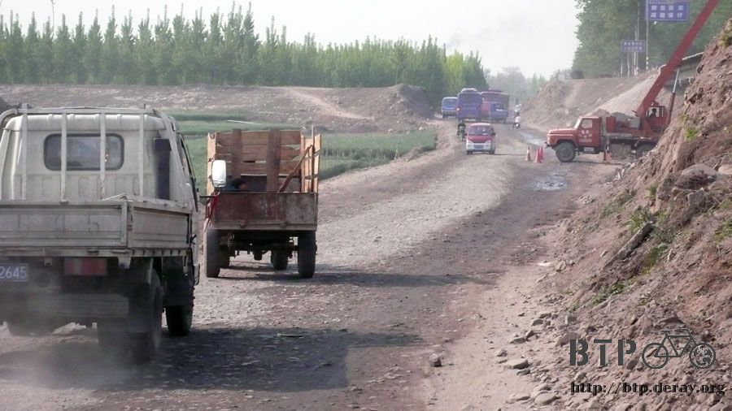
路上看到驢車載了一堆的青菜，但是主人不在，結果驢子就在那邊吃起了自己的貨物來了XD
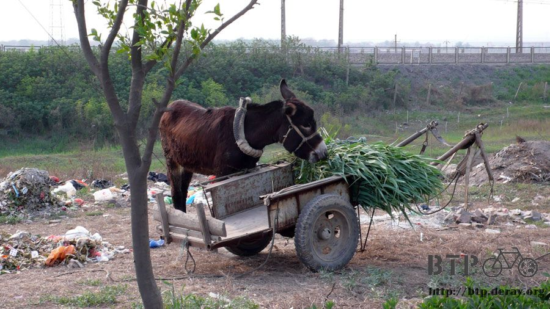
下午五點抵達邯鄲，漫畫『墨攻』，墨者革離曾經守過這個城，但現在已經看不出這裡曾經是一座城了。
整體來說還算是一個會讓人喜歡的現代城市，比我想像中的要大很多，
新的部分，很現代化，街道乾淨的不像是中國。
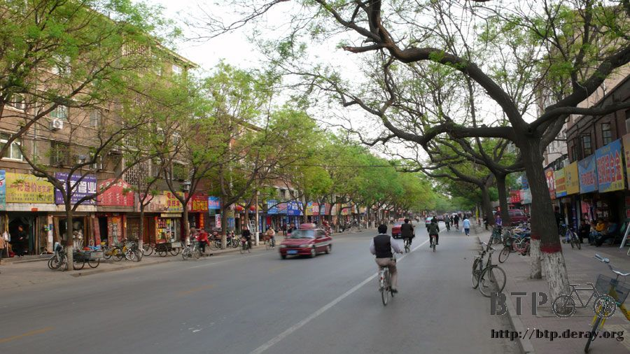
舊的部分，維持傳統，彷彿時間在這沒留下多少痕跡。
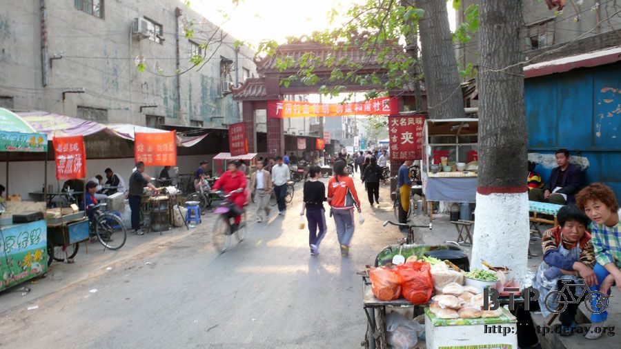
繞呀繞的，中國的面貌多的不可思議，我這次沒有機會到沿海的都市去，
想必那邊的生活一定更加的五光十色吧。
路上看到有飲料店，這本身就是很少見的東西，而且他還是賣珍珠奶茶的。
賣這東西當然打的是台灣牌啦，說是台灣口味，連名字都叫『快可粒』，真令人好笑。
一杯一塊錢的珍珠奶茶，大概只有300CC，
這是我到中國以來，第一次花錢買東西會有『怎麼才這麼一丁點？』的感覺。
也幸好它只有一丁點，因為這喝起來一點也不像珍珠奶茶呀=..=
有點像是杏仁奶+焦糖的味道，只要不要想說它是珍珠奶茶，其實還不算難喝。
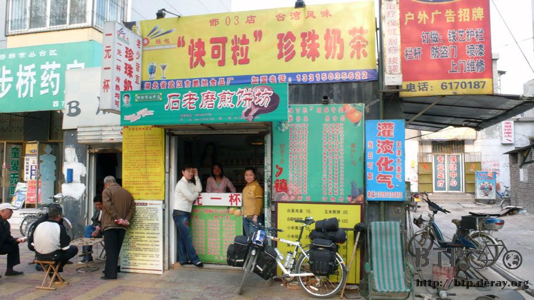
從這些店員中打聽到住宿的情報，前面有一個小街道，裡頭盡是便宜的住宿場所。
還真的如她們所說，一個又一個的『住宿』牌子掛的滿滿的，看來可以比價到一間喜歡的為止。
跟一位兼職開雜貨攤的大叔租了一晚上的房間，因為他只算我15塊錢，
其他人都說一個人要佔兩人房的話，得付30塊，哇靠，你沒單人房還怪我一個人旅行呀？
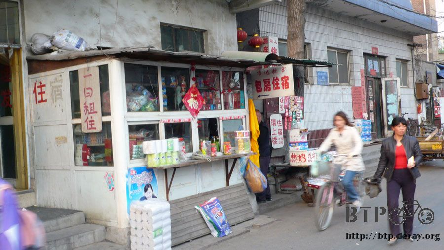
雜貨攤大叔的15塊房間，則是一間四人房，裝備什麼的都很高檔，還有電視可以讓我聽點聲音。
收拾一下裝備，洗了越來越髒的風衣外套，就溜出去吃飯了，
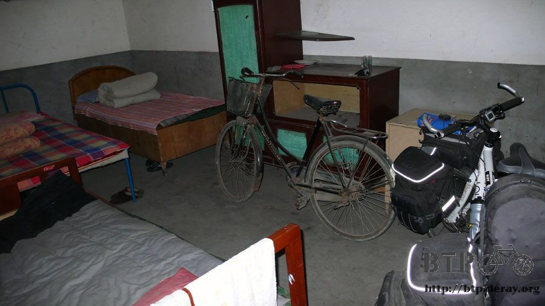
找到一間看起來很好吃的餐館，裡頭除了我之外全都是下課的學生在吃飯，
我有樣學樣的跟著點了一份炒飯(2.5塊)，然後還點了一碗酸辣豆腐湯(5塊)
吃飽之後，跟老闆娘拿一堆紙巾，這次旅行沒有帶衛生紙，只好每天都到處拿一些來用。
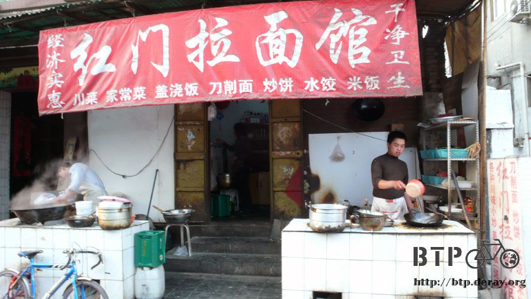
吃飽之後在街上散步消化，因為我穿得很破爛，根本沒有人會多看我一眼，
騎車的時候被當成奇怪的人參觀，下車之後，拿掉頭巾跟太陽眼鏡，穿著短褲、拖鞋的，
比當地人還要窮酸的樣子，可以自由自在的晃來晃去也不會引來異樣的眼光，實在太好了。
現在越來越早起床，越來越早出發，也越來越早就能找到落腳的地方，
時間運用上還挺有餘裕的，只是因為太早起的關係，晚上九點過後就會變得很愛睏
歇息吧，zzZZz
繼續閱讀：4.28 河的兩岸
中國-人民幣－ 1：4.3 台幣
4.27 |
總計：35元 |
乾糧四個燒餅2元、午餐紅燒肉6.5元、白飯1元、鳳梨1元、網吧一小時2元、晚餐炒飯2.5元、酸辣豆腐湯5元、住店15元 |
|